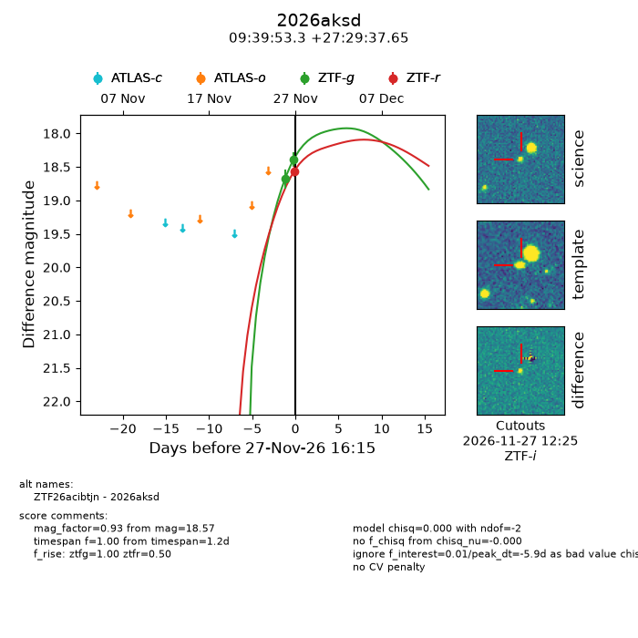
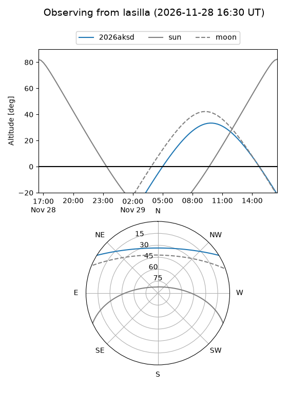
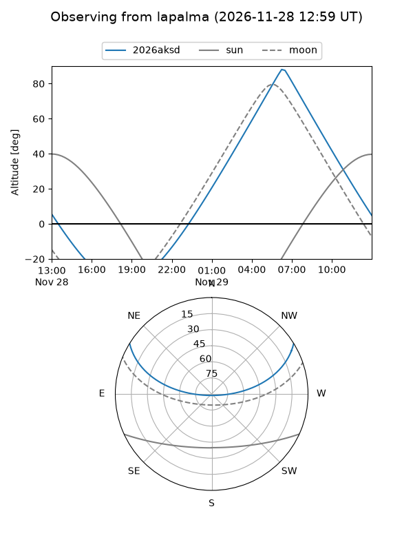
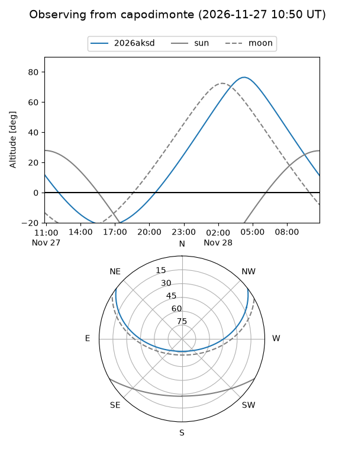
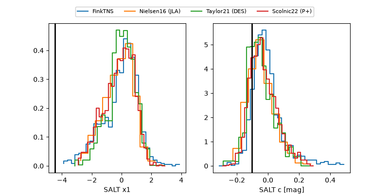

2026aksd
Target 2026aksd at 2026-11-27 16:16
Aliases and brokers:
FINK-ZTF: ztf.fink-portal.org/ZTF26acibtjn
Lasair-ZTF: lasair-ztf.lsst.ac.uk/objects/ZTF26acibtjn
ALeRCE-ZTF: alerce.online/object/ZTF26acibtjn
YSE-PZ: ziggy.ucolick.org/yse/transient_detail/2026aksd
TNS name: wis-tns.org/object/2026aksd
Direct TNS query: direct search
alt names
ZTF26acibtjn (ztf,fink_ztf)
2026aksd (tns,yse)
Coordinates:
equatorial (ra, dec) = 144.9723,+27.49379
equatorial (HMS+DMS) = 09:39:53.34,+27:29:37.65
galactic (l, b) = (200.9529,+47.72468)
Flags:
peak dt: -5.9
Photometry:
last ztfg=18.39, ztfr=18.57
2 ztfg, 1 ztfr detections
Lightcurve

Visibility



Additional plots
